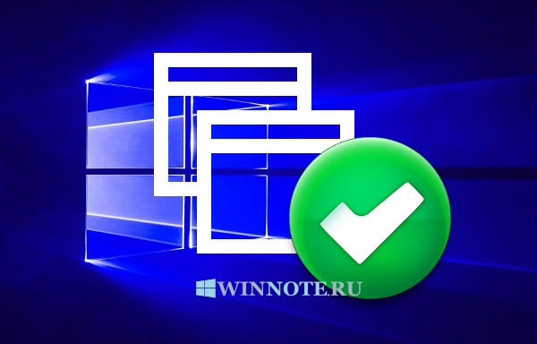
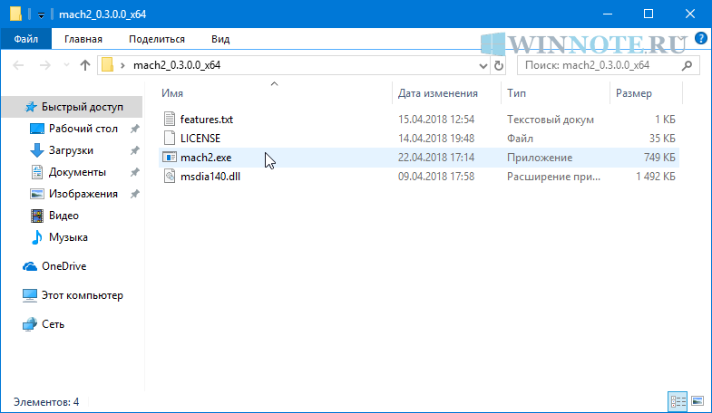
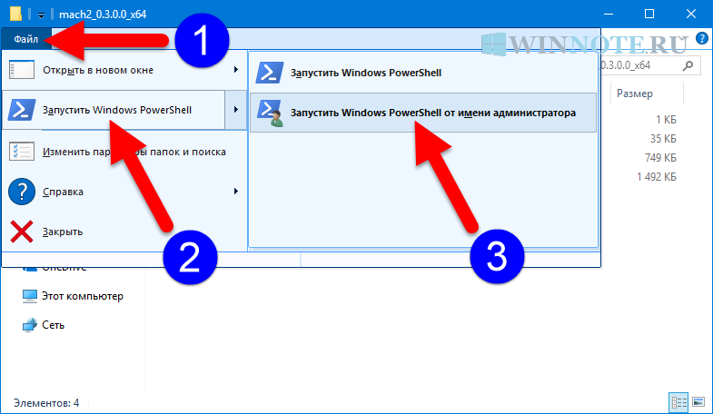
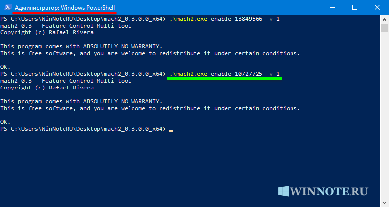
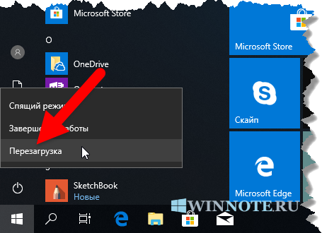
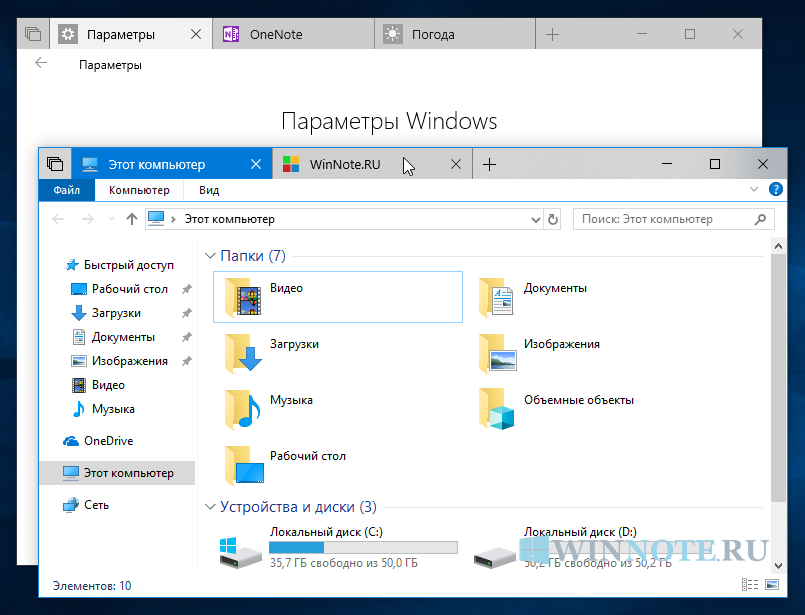
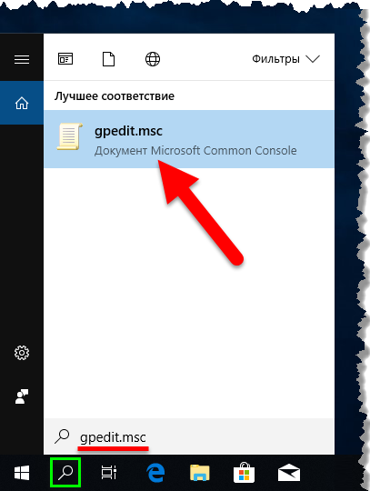
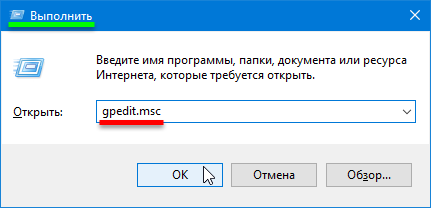
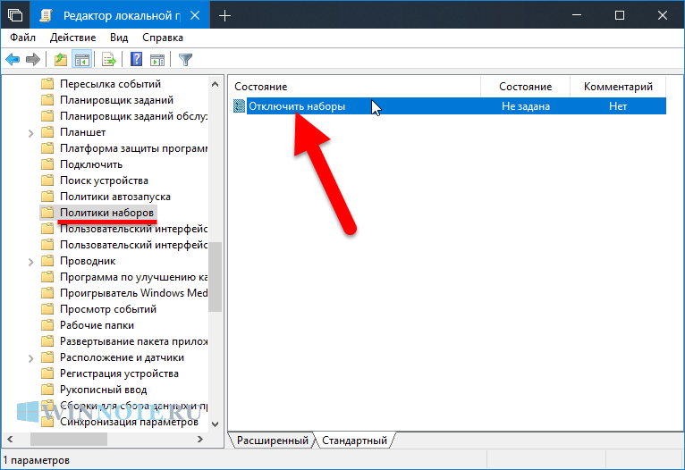
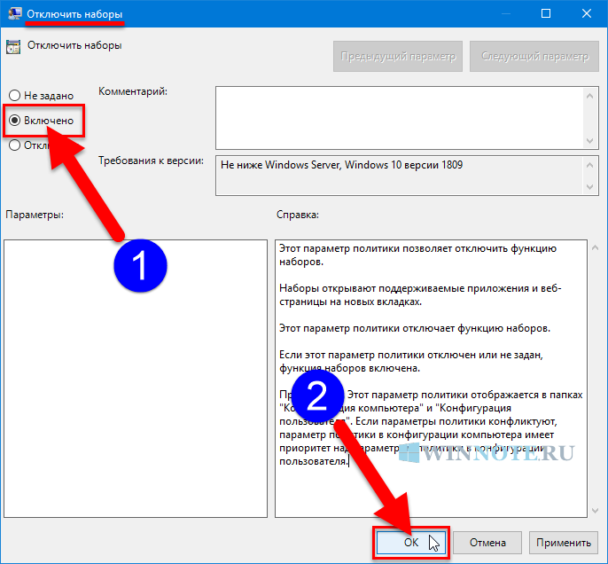

Как включить (отключить) функцию Наборы (Sets) в Windows 10

В данной статье показаны действия, с помощью которых вы сможете включить (отключить) функцию Наборы (Sets) в Windows 10
Одним из множества улучшений в операционной системе Windows 10 является реализация интерфейса вкладок для различных приложений и называется эта функция Наборы (Sets).
Функция Наборы (Sets) позволяет комбинировать окна разных
приложений в виде вкладок, точно также, как это реализовано в
веб-браузерах.
Данная функция доступна для участников программы предварительной
оценки Windows, в сборках Redstone 5 Insider Preview. Но, например при
чистой установке, функция Наборы отключена, и в графическом интерфейсе
отсутствует опция для её включения.
Перед выполнением дальнейших действий, рекомендуется создать точку восстановления
Как включить функцию Наборы (Sets) в Windows 10
Чтобы включить функцию Наборы (Sets), в зависимости от разрядности вашей операционной системы скачайте по ссылкам ниже нужный архив с программой mach2Скачать архив mach2_0.3.0.0_x64.zip⇓
Скачать архив mach2_0.3.0.0_x86.zip⇓
Извлеките файлы из архива в любое место и откройте в проводнике Windows папку с программой mach2.exe

Теперь в этой же папке выберите меню Файл > Запустить Windows PowerShell ► Запустить Windows PowerShell от имени администратора

.\mach2.exe enable 13849566 -v 1
 функцию Наборы (Sets) в Windows 10")
.\mach2.exe enable 10727725 -v 1

После выполнения команд, закройте все окна и перезагрузите компьютер.

После перезагрузки компьютера, функция Наборы (Sets) будет включена и вам останется лишь прочитать статью ➯ Как использовать функцию Наборы (Sets) в Windows 10

Как отключить функцию Наборы (Sets) в Windows 10
После того как скрытая возможность в виде функции Наборы (Sets)
включена способом рассмотренным выше, то теперь для её отключения (или
включения) можно использовать редактор локальной групповой политики или
редактор системного реестра.
Чтобы отключить Наборы (Sets), откройте редактор локальной групповой политики, для этого нажмите сочетание клавиш + R и в открывшемся окне Выполнить введите gpedit.msc и нажмите клавишу Enter↵ или воспользуйтесь поиском в Windows.

Конфигурация компьютера ➯ Административные шаблоны ➯ Компоненты Windows ➯ Политики наборов
Далее, в правой части окна дважды щелкните левой кнопкой мыши по параметру политики с названием Отключить наборы

В окне Отключить наборы установите переключатель из положения Не задано в положение Включено и нажмите кнопку OK

Чтобы изменения вступили в силу, выполните выход из сиcтемы. После
выполненных действий, функция Наборы (Sets) будет недоступна.
Данный способ предполагает применение файлов реестра (reg-файлов) и
прежде всего актуален для Windows 10 Домашняя (Home), но также подходит
для всех редакций операционной системы Windows. Прежде чем вносить
какие-либо изменения в реестр, рекомендуется создать точку восстановления
Чтобы включить функцию Наборы (Sets), создайте и примените файл реестра следующего содержания:Windows Registry Editor Version 5.00[HKEY_LOCAL_MACHINE\SOFTWARE\Microsoft\Windows\CurrentVersion\Policies\Explorer]"TurnOffSets"=dword:00000001
Windows Registry Editor Version 5.00[HKEY_LOCAL_MACHINE\SOFTWARE\Microsoft\Windows\CurrentVersion\Policies\Explorer]"TurnOffSets"=-
После применения файлов реестра, чтобы изменения вступили в силу, выполните выход из системы.